<html>

<head lang="de">
	<meta charset="utf-8">
	<link href="https://fonts.googleapis.com/css?family=Roboto:400,500,700" rel="stylesheet"> 
	<title>U4</title>
	<link rel="stylesheet" type="text/css" href="format.css">
	<style type="text/css">
		<!-- a:link {
			font-family:'Roboto', sans-serif; 
			font-size: 10pt;
			text-decoration: none;
		}

		a:visited {
			font-family:'Roboto', sans-serif; 
			font-size: 10pt;
			text-decoration: none;
		}

		a:hover {
			color: #FF3333;
			text-decoration: none;
			font-weight: normal;
			font-size: 10pt;
		} //-->
	</style>
<!--  -->
</head>

<body>

	<iframe src="oben.html" width="800" height="120" name="IFrame3" id="IFrame3" scrolling="no" frameborder="0">
         <p>Ihr Browser kann leider keine eingebe5tteten Frames anzeigen:Sie k&ouml;nnen die eingebettete Seite &uuml;ber den
         folgenden.</p>
	</iframe>
	<br>
	<h3>Ü4: Manipulation von Bildparametern, Farbsysteme</h3>
	<div>
		<h3>1. Aufgabe RGB und YCbCr</h3>

		<p class="task"><b>a.</b> RGB ist der gebräuchlichste Farbraum bei der Aufzeichnung und Darstellung von Bildern. Hier wird das Lichtspektrum in seine Rot-, Grün- und Blauanteile aufgespalten. Der YCbCr Farbraum hingegen besteht aus der Luminanz Y (Helligkeit) und den Farbanteilen (Chrominanz) Cb und Cr. Die RGB Farben eines Bildes lassen sich also in den YCbCr Farbraum transformieren. Für viele Anwendungen, z.B. die Bildkompression, ist es günstig, Helligkeits- und Farbinformation getrennt zu verarbeiten. Nenne den physiologischen Grund dafür!</p>


		<p class="task"><b>b.</b> Erstelle aus deinem eigenen Bild Versionen, die nur jeweils den Rot- , Grün- und Blauanteil zeigen. (Hinweis: Dazu müssen einfach die jeweils anderen Farbwerte auf null gesetzt werden).</p>


		<p class="task"><b>c.</b> Nun erzeuge jeweils ein Bild für Y, Cb und Cr. Lese dafür jedes Pixel ein und berechne die Helligkeit Y (Luminanzformel!) sowie die Chrominanzen Cb und Cr (Chrominanzformeln!) aus den RGB Werten.</p>


		<p class="task"><b>d.</b> Wandle zur Rekonstruktion deines Bildes die YCbCr Werte zurück in RGB.<br>

		<i>Ins Übungsprotokoll: Sourcecode, Bilder R, G, B bzw. Y, Cb und Cr, Rekonstruiertes Bild (YCbCr -> RGB)</i></p>

		<h3>Lösung:</h3>
		<h4>a.</h4>
		<p>
		Das Farbmodell YCbCr nutzt Informationen, dass das menschliche Auge empfindlicher für die Informationen
		über die Helligkeit (Luminanz, Y) als über Farben(Chrominanz, Cb und Cr)des Bildes ist. Somit kann das menschliche Auge kleine Helligkeitsunterschiede besser als Farbunterschiede wahrnehmen.<br> Diese Eigenschaft hat einen großen Vorteil in der Farbunterabtastung. Dabei wird die Abtastrate und damit die Datenmenge der Chrominanz-Kanäle Cb und Cr gegenüber der Abtastrate des Luminanz-Kanals Y reduziert, ohne dass es zu einer spürbaren Qualitätsverringerung kommt. So kann man z. B. mit der JPEG-Komprimierung 50 % der Datenmenge einsparen.


		<!-- Deshalb sind die Daten über Iluminanz in hoher Auflösung aufbewahrt oder versandt und die Chrominanzdaten(Cb, Cr) sind kompressiert und können versandt werden mit niedriger Bandbegrenzung. -->

		</p>

		<h4>b.</h4>
		<h5>Sourcecode:</h5>
		<pre class="code_form">
	private static void singleColorChannelImage(String inFilename, String channel, String outputFileName) throws IOException {
	  InputStream in = new FileInputStream(inFilename);
	  BmpImage bmpNewImage = BmpReader.read_bmp( in );
	  OutputStream out = new FileOutputStream(outputFileName);

	  for (int y = 0; y < bmpNewImage.image.getHeight(); y++) {
	    for (int x = 0; x < bmpNewImage.image.getWidth(); x++) {
	      PixelColor color = null;
	      int red = bmpNewImage.image.getRgbPixel(x, y).r;
	      int green = bmpNewImage.image.getRgbPixel(x, y).g;
	      int blue = bmpNewImage.image.getRgbPixel(x, y).b;

	      switch (channel) {
	        case "red":
	          color = new PixelColor(0, 0, red);
	          break;
	        case "green":
	          color = new PixelColor(0, green, 0);
	          break;
	        case "blue":
	          color = new PixelColor(blue, 0, 0);
	          break;
	        default:
	          color = new PixelColor(blue, green, red);
	          break;
	      }

	      bmpNewImage.image.setRgbPixel(x, y, color);
	    }
	  }
	  try {
	    BmpWriter.write_bmp(out, bmpNewImage);
	  } finally {
	    out.close();
	  }
	}

		</pre>

		<h5>Bilder der isolierten Farbkanäle</h5>

<table>
  			<tr>
    			<th><h6>Roter Kanal</h6></th>
    			<th><h6>Grüner Kanal</h6></th>
    			<th><h6>Blauer Kanal</h6></th>
  			</tr>

			<tr>
				<td><p></td>
				<td><p>
					
				</p></td>
				<td><p>
					
				</p></td>
			</tr>


</table>


		<h4>c.</h4>
		<h5>Sourcecode:</h5>
		<pre class="code_form">private static List<List<Double>> singleYCbCrChannelImage(String inFilename, String channel, String outputFileName) throws IOException {
		 InputStream in = new FileInputStream(inFilename);
		 BmpImage bmpNewImage = BmpReader.read_bmp(in);
		 OutputStream out = new FileOutputStream(outputFileName);
		 List<List<Double>> YCbCrValuesOfEveryPixel = new ArrayList<>();

		 for (int y = 0; y < bmpNewImage.image.getHeight(); y++) {
				for (int x = 0; x < bmpNewImage.image.getWidth(); x++) {
					 PixelColor color = null;

					 int red = bmpNewImage.image.getRgbPixel(x, y).r;
					 int green = bmpNewImage.image.getRgbPixel(x, y).g;
					 int blue = bmpNewImage.image.getRgbPixel(x, y).b;
					 List<Integer> rgb = new ArrayList<>(Arrays.asList(red, green, blue));

					 YCbCrValuesOfEveryPixel.add(rgbToYCbCr(rgb)); // To reconstruc timage later

					 Map<String, List<Integer>> YCbCr = rgbToYCbCrWithDividedChannelsForRGB(rgb);
					 int Y_R = YCbCr.get("Y").get(0);
					 int Y_G =YCbCr.get("Y").get(1);
					 int Y_B = YCbCr.get("Y").get(2);

					 int Cb_R = YCbCr.get("Cb").get(0);
					 int Cb_G = YCbCr.get("Cb").get(1);
					 int Cb_B = YCbCr.get("Cb").get(2);

					 int Cr_R = YCbCr.get("Cr").get(0);
					 int Cr_G = YCbCr.get("Cr").get(1);
					 int Cr_B = YCbCr.get("Cr").get(2);

					 switch(channel) {
							case "Y":
								 color = new PixelColor(Y_B, Y_G, Y_R);
								 break;
							case "Cb":
								 color = new PixelColor(Cb_B, Cb_G, Cb_R); // ((-0.169*red)+128) + ((-0.331*green)+128) + ((0.5*blue)+128)
								 break;
							case "Cr":
								 color = new PixelColor(Cr_B, Cr_G, Cr_R);
								 break;
							default:
								 color = new PixelColor(Y_B, Y_G, Y_R);
								 break;
					 }

					 bmpNewImage.image.setRgbPixel(x, y, color);
				}
		 }

		 try {
				BmpWriter.write_bmp(out, bmpNewImage);
		 } finally {
				out.close();
		 }

		 return YCbCrValuesOfEveryPixel;
	}

	private static Map<String, List<Integer>> rgbToYCbCrWithDividedChannelsForRGB(List<Integer> rgb) {
		 int red = rgb.get(0);
		 int green = rgb.get(1);
		 int blue = rgb.get(2);

		 Map<String, List<Integer>> YCbCrChannels = new HashMap<>();

		 double Y = ((0.299*red) + (0.587*green) + (0.114*blue)) + 0;
		 int Y_R = (int)roundValue(Y, 0);
		 int Y_G = (int)roundValue(Y, 0);
		 int Y_B = (int)roundValue(Y, 0);
		 List<Integer> Y_RGB = new ArrayList<>(Arrays.asList(Y_R, Y_G, Y_B));
		 YCbCrChannels.put("Y", Y_RGB);


		 int Cb_R = (int)roundValue((-0.169*red)+128, 0);
		 int Cb_G = (int)roundValue((-0.331*green)+128, 0);
		 int Cb_B = (int)roundValue((0.5*blue)+128, 0);
		 List<Integer> Cb_RGB = new ArrayList<>(Arrays.asList(Cb_R, Cb_G, Cb_B));
		 YCbCrChannels.put("Cb", Cb_RGB);

		 int Cr_R = (int)roundValue((0.5*red)+128, 0);
		 int Cr_G = (int)roundValue((-0.419*green)+128, 0);
		 int Cr_B = (int)roundValue((-0.081*blue)+128, 0);
		 List<Integer> Cr_RGB = new ArrayList<>(Arrays.asList(Cr_R, Cr_G, Cr_B));
		 YCbCrChannels.put("Cr", Cr_RGB);

		 return YCbCrChannels;
	}

	private static double roundValue(double value, int decimals) {
			  return Math.round(value * Math.pow(10, decimals))/ Math.pow(10, decimals);
		   }
		</pre>
		<h5>Luminaz- und Chromanz-Bilder</h5>
<!-- 		<h6>YCbCr</h6>
		
		<h6>Y</h6>
		
		<h6>Cb</h6>
		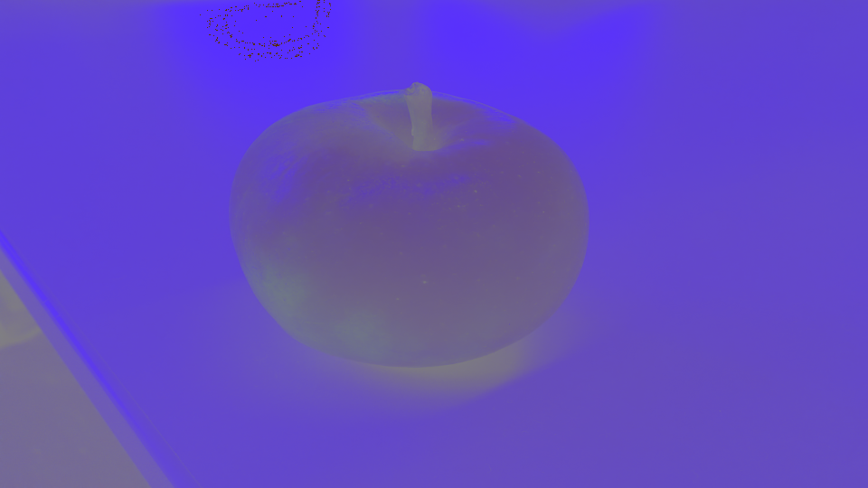
		<h6>Cr</h6>
		
 -->
<table class="cont_pics">

		<tr>
			<td><p></p></td>
			<td><p></p></td>
		</tr>

		<tr>
    	<th><h6>YCbCr</h6></th>
    	<th><h6>Y</h6></th>
  		</tr>

		<tr>
			<td><p></p></td>
			<td><p></p></td>
		</tr>
		<tr>
  		<th><h6>Cb</h6></th>
    	<th><h6>Cr</h6></th>
  	</tr>

</table>

		<h4>d.</h4>
		<h5>Sourcecode:</h5>
		<pre class="code_form">
	private static void reconstructRGBImageFromYCbCr(String inFilename, List&lt;List&lt;Double&gt;&gt; YCbCr, String outputFileName) throws IOException {
		InputStream in = new FileInputStream(inFilename);
		BmpImage bmpNewImage = BmpReader.read_bmp(in);
		OutputStream out = new FileOutputStream(outputFileName);
		 int pixelCounter = 0;

		  for (int y = 0; y &lt; bmpNewImage.image.getHeight(); y++) {
			 for (int x = 0; x &lt; bmpNewImage.image.getWidth(); x++) {
				PixelColor color = null;
				List&lt;Double&gt; rgb = YCbCrToRGB(YCbCr.get(pixelCounter));
				int red = (int)roundValue(rgb.get(0), 0);
				int green = (int)roundValue(rgb.get(1), 0);
				int blue = (int)roundValue(rgb.get(2), 0);

				color = new PixelColor(blue, green, red);

				bmpNewImage.image.setRgbPixel(x, y, color);
				pixelCounter++;
			 }
		  }
		  try {
			 BmpWriter.write_bmp(out, bmpNewImage);
		  } finally {
			 out.close();
		  }
	   }

	private static List&lt;Double&gt; YCbCrToRGB(List&lt;Double&gt; YCbCr) {
		  double Y = YCbCr.get(0);
		  double Cb = YCbCr.get(1);
		  double Cr = YCbCr.get(2);

		  double red = (1*Y) + (0*(Cb-128)) + (1.403*(Cr-128));
		  double green = (1*Y) + (-0.344*(Cb-128)) + (-0.714*(Cr-128));
		  double blue = (1*Y) + (1.773*(Cb-128)) + (0*(Cr-128));

		  red = roundValue(red, 2);
		  green = roundValue(green, 2);
		  blue = roundValue(blue, 2);

		  return new ArrayList&lt;&gt;(Arrays.asList(red, green, blue));
	 }
		</pre>
		<h5>Rekonstruiertes RGB Bild aus YCbCr-Werten</h5>
		
	</div>
	<br>
	<div>
		<h3>Aufgabe 2: Histogramm</h3>
		<p class="task">Mithilfe eines Histogramms kann die Verteilung (Häufigkeit) der Helligkeiten eines Bildes dargestellt werden. Erstelle ein Histogramm für das monochrome Detailbild aus Aufgabe 1 (Y - Bild). Lese dafür den Helligkeitswert der Pixel ein und bestimme die Helligkeitshäufigkeiten (Anzahl gleicher Helligkeiten). Diese sollen in eine Textdatei geschrieben und als Histogramm dargestellt werden (z.B. in Excel, Java).</p>
		<p class="task">Ins Übungsprotokoll: Sourcecode, Histogramm des Bildes</p>

		<h3>Lösung:</h3>
		<h5>Sourcecode:</h5>
		<pre class="code_form">
private static void histogramm(String inFilename, String outputTextFileName, String outputImageFileName) throws IOException {
		InputStream in = new FileInputStream(inFilename);
		BmpImage bmpNewImage = BmpReader.read_bmp(in);
		PrintWriter outText = new PrintWriter(outputTextFileName);
		OutputStream outImage = new FileOutputStream(outputImageFileName);
		List&lt;Integer&gt; histogramm = new ArrayList&lt;&gt;();

			  // Initialise Histogramm
			  for (int i = 0; i &lt; 256; i++) {
				 histogramm.add(0);
			  }

			  for (int y = 0; y &lt; bmpNewImage.image.getHeight(); y++) {
				 for (int x = 0; x &lt; bmpNewImage.image.getWidth(); x++) {
					int red = bmpNewImage.image.getRgbPixel(x, y).r;
					int green = bmpNewImage.image.getRgbPixel(x, y).g;
					int blue = bmpNewImage.image.getRgbPixel(x, y).b;

					int averageValue = (red+green+blue)/3;
					int Y = averageValue; // Helligkeitswert

					if (valueIsInInclusiveIntervall(Y, 0, 255)) {
					   histogramm.set(Y, histogramm.get(Y)+1);
					} else {
					   throw new RuntimeException(&quot;Value is out of the Intervall: [0..255]&quot;);
					}
				 }
			  }

			  try {
				 for (int value: histogramm) outText.println(value+&quot;,&quot;);
				 BmpWriter.write_bmp(outImage, bmpNewImage);
			  } finally {
				 outText.close();
				 outImage.close();
			  }
		   }

	private static boolean valueIsInInclusiveIntervall(int value, int min, int max) {
			  return (min &lt;= value &amp;&amp; value &lt;= max);
		   }
		</pre>
		<h5>Histogramm</h5>
		

	</div>
<br>
<h3>Aufgabe 3: Helligkeit und Kontrast</h3>
	<p class = "task"><b>a.</b> Berechne die mittlere Helligkeit des monochromen Detailbildes aus Aufgabe 1 (Y - Bild). Lese dafür den
Helligkeitswert der Pixel ein. Die mittlere Helligkeit ist die Summe aller Helligkeitswerte geteilt durch die
Anzahl der Bildpunkte. Berechne auch den Kontrast des Bildes, d.h. die Standardabweichung der Helligkeit.<br>
</p><p class = "task"><b>b.</b>  Verändere das monochrome Bild in der Helligkeit durch Subtrahieren bzw. Addieren eines konstanten
Werts (20 +/- Schrittweite) bis zur minimalen (dunkel) und maximalen (hell) Helligkeit, d.h. so dass das
jeweilige Motiv gerade noch zu erkennen ist. Beachte dabei, dass ihr beim Ergebnis der
Pixelwertberechnung im 8-Bit-Bereich bleibt. Berechne die Histogramme des hellsten und dunkelsten
Bildes.<br></p>
<p class = "task"><b>c.</b>  Erhöhe bzw. verringere den Kontrast durch Multiplikation mit den Faktoren k=(0.2, 0.4, 0.8, 1.0) sowie
k=(1.5, 2.5, 5.0, 10.0). Ab welcher Verstärkung bleibt nur noch ein s/w Bild? Was würde bei einer
Kontraständerung mit k < 0 passieren (Einfach ausprobieren und Bild speichern!)?
Berechne auch hier das Histogramm des kontrastärmsten und kontrastreichsten Bildes und vergleiche mit
denen der Helligkeitsänderung. Was haben Helligkeits- und Kontraständerung für eine Auswirkung auf das
Histogramm (Vergleiche auch mit dem Histogramm aus Aufgabe 2)?
<br><i> Ins Übungsprotokoll: Sourcecode, Ergebnisse für mittlere Helligkeit und Kontrast, Ergebnisse
Minimum/Maximum für Helligkeit und Kontrast mit dazugehörigen Histogrammen, Alle Bilder</i>
</p>
<br>

<h3>Lösung:</h3>

<h4>a.</h4>
<p>mittlere Helligkeit des monochromen Detailsbildes(Y - Bild):
162.01
</p>

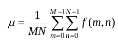 

<br>
<p>
Kontrast des Bildes, d.h. die Standardabweichung der Helligkeit:
42.92 </p>
 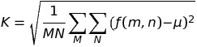 
<h4>b.</h4>
<p></p>


<h6>minimale Helligkeit(dunkel) erzielt durch -160</h6>
 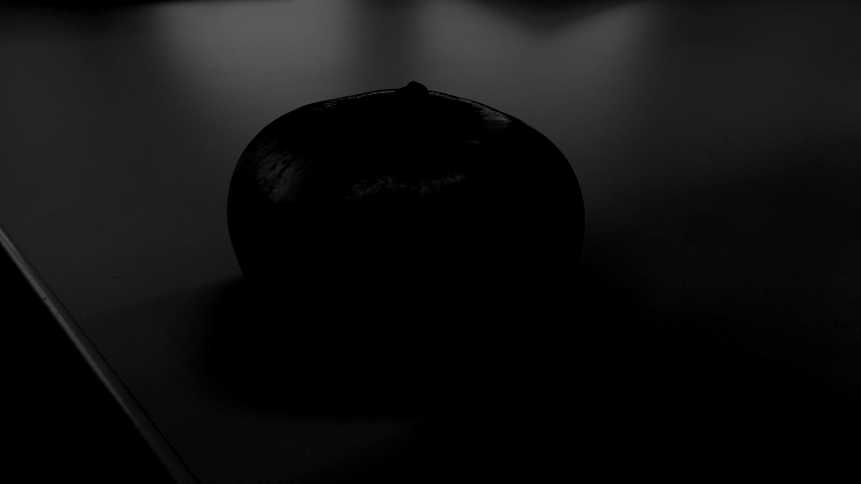

 <br> <br>
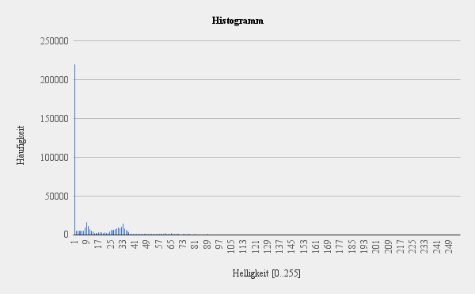

<h6>maximale Helligkeit(hell) erzielt durch +140</h6>
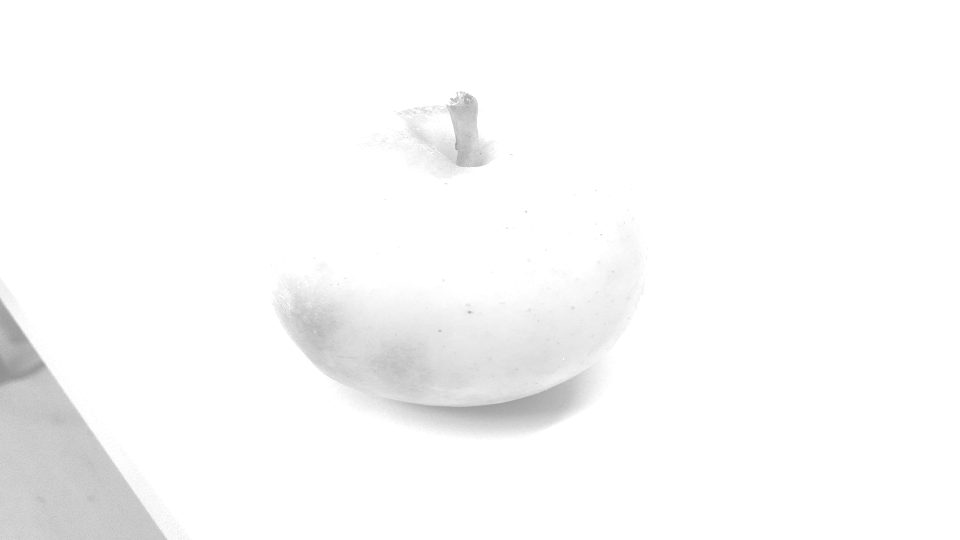
 <br> <br>
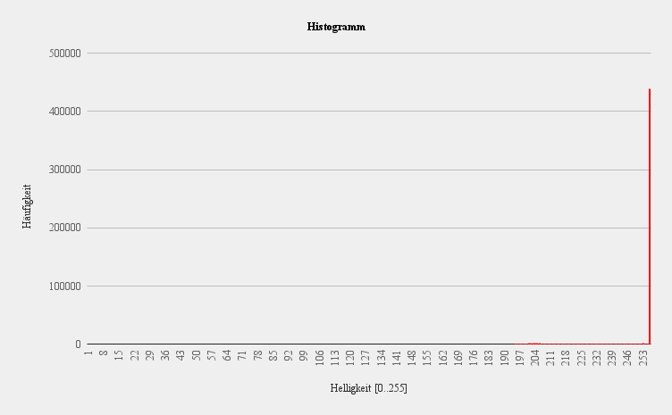
<br>

<h5>Sourcecode:</h5>
<pre class="code_form">
private static void histogramm_2(String inFilename, String outputTextFileName, String outputImageFileName, int step)
			throws IOException {
		int diff = step;
		InputStream in = new FileInputStream(inFilename);
		BmpImage bmpNewImage = BmpReader.read_bmp(in);
		String name = outputImageFileName.substring(0, outputImageFileName.length() - 4);
		PrintWriter outText = new PrintWriter(outputTextFileName + diff);
		OutputStream outImage = new FileOutputStream(name + diff + ".bmp");
		List<Integer> histogramm = new ArrayList<>();

		// Initialise Histogramm
		for (int i = 0; i < 256; i++) {
			histogramm.add(0);
		}

		int min = 0, max = 0;
		for (int y = 0; y < bmpNewImage.image.getHeight(); y++) {
			for (int x = 0; x < bmpNewImage.image.getWidth(); x++) {
				int red = bmpNewImage.image.getRgbPixel(x, y).r;
				int green = bmpNewImage.image.getRgbPixel(x, y).g;
				int blue = bmpNewImage.image.getRgbPixel(x, y).b;

				int curr_y = (red + green + blue) / 3;

				if (curr_y < min) {
					min = curr_y;
				}
				if (curr_y > max) {
					max = curr_y;
				}
			}
		}

		System.out.println("max: " + max + ", min: " + min);

		for (int y = 0; y < bmpNewImage.image.getHeight(); y++) {
			for (int x = 0; x < bmpNewImage.image.getWidth(); x++) {
				int red = bmpNewImage.image.getRgbPixel(x, y).r;
				int green = bmpNewImage.image.getRgbPixel(x, y).g;
				int blue = bmpNewImage.image.getRgbPixel(x, y).b;

				int averageValue = (red + green + blue) / 3;

				int Y = averageValue + diff;

				// to 1 byte limits
				if (Y < 0)
					Y = 0;
				if (Y > 255)
					Y = 255;
				histogramm.set(Y, histogramm.get(Y) + 1);
				// B/W

				PixelColor color = new PixelColor(Y, Y, Y);
				bmpNewImage.image.setRgbPixel(x, y, color);
			}
		}

		try {
			for (int value : histogramm)
				outText.println(value + ",");
			BmpWriter.write_bmp(outImage, bmpNewImage);
		} finally {
			outText.close();
			outImage.close();
		}
	}
</pre>


<br>
<h4>c.</h4>
 <p>Beim maximal hellen Bild konzentrieren sich die Pixel auf der rechten Seite des Histogramms, beim maximal dunklen Bild ist die Verteilung umgekehrt d.h auf der linken Seite des Histogramms.<br> Das kontrastarme Bild weist das Histogramm auf, das in der Mitte zu einer Spitze gebündelt ist. Das kontrastreiche Bild enthält gleichzeitig helle Bereiche und dunkle Bereiche, die an beiden Enden der Skala kammartige Strukturen aufweisen.</p>

  <p>Die Helligkeitsänderung durch Subtrahieren bzw. Addieren eines konstanten Werts bewirkt eine Änderung der mittleren Helligkeit. Die Kontaständerung (Multiplikation) ändert die Standardabweichung der Helligkeit</p>


<h6>Das kontrastärmste Bild bei einer Multiplikation mit 0.2</h6>
 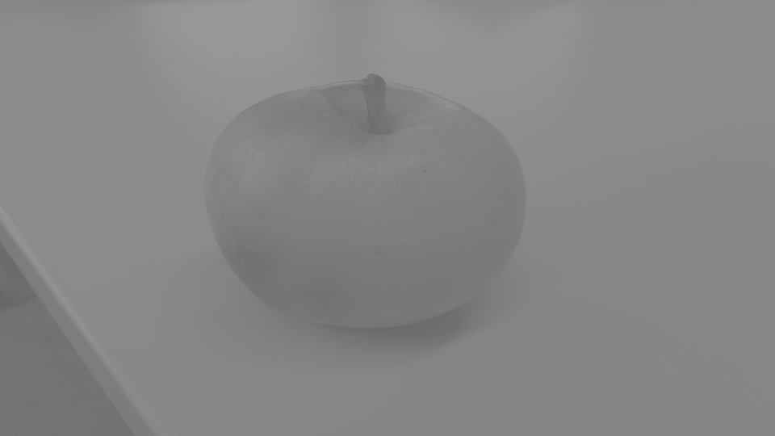

 <br> <br>

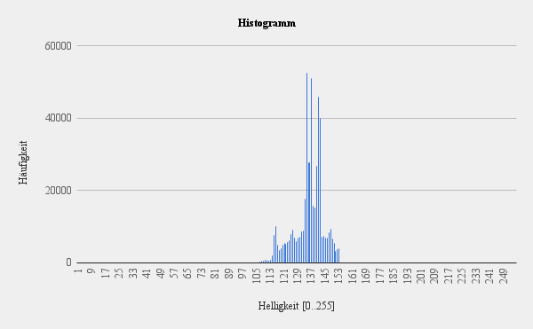
<br>
<br>

<h6>Das kontrastreichste Bild bei einer Multiplikation mit 2.5</h6>
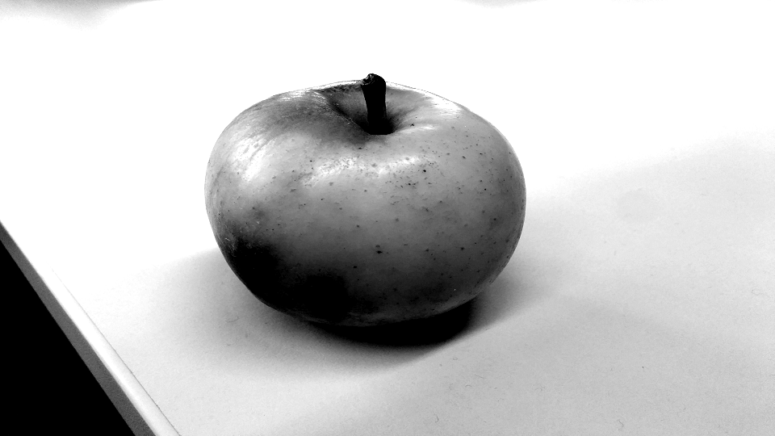
 <br> <br>
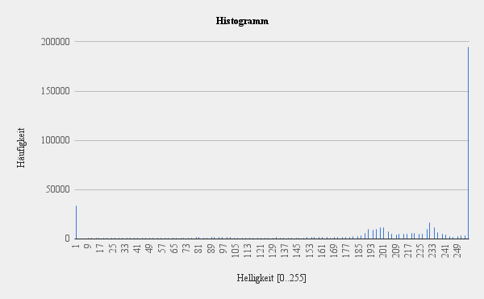
<br>
<h5>Sourcecode:</h5>
<pre class="code_form">
	private static void histogramm_3(String inFilename, String outputTextFileName, String outputImageFileName, double step) throws IOException {
	 	 double diff = step;  
	      InputStream in = new FileInputStream(inFilename);
	      BmpImage bmpNewImage = BmpReader.read_bmp(in);
	      String name = outputImageFileName.substring(0, outputImageFileName.length()-4);
	      OutputStream outImage = new FileOutputStream(name + diff + "-c.bmp");
	      List<Integer> histogramm = new ArrayList<>();
	      
	      
	      
	      // Initialise Histogramm
	      for (int i = 0; i < 256; i++) {
	         histogramm.add(0);
	      }
	      
	      
	      for (int y = 0; y < bmpNewImage.image.getHeight(); y++) {
	         for (int x = 0; x < bmpNewImage.image.getWidth(); x++) {
	            int red = bmpNewImage.image.getRgbPixel(x, y).r;
	            int green = bmpNewImage.image.getRgbPixel(x, y).g;
	            int blue = bmpNewImage.image.getRgbPixel(x, y).b;

	            int averageValue = (red+green+blue)/3;

	         // int Y = (int) ((int) averageValue * diff);
	            int Y = (int) (diff * (averageValue - 128) + 128 + diff);
	            
	            if (Y < 0) Y = 0;
	            if (Y > 255) Y = 255;
	            histogramm.set(Y, histogramm.get(Y)+1);
	                   
	         // PixelColor color = new PixelColor(Y, 0, 0);
	            PixelColor color = new PixelColor(Y, Y, Y);
	            bmpNewImage.image.setRgbPixel(x, y, color);
	         }
	      }

	      try {
	         for (int value: histogramm) outText.println(value+",");
	         BmpWriter.write_bmp(outImage, bmpNewImage);
	      } finally {
	         outText.close();
	         outImage.close();
	      }
	   }


</pre>
<br>
</body>

</html>
